Data
Customer reviews from six Amazon product categories (Blitzer et al., 2007), one review per line, already tokenised and lower-cased.
The file all_sentiment_shuffled.txt holds 11,914 reviews (1,794,121 tokens; median length
99 tokens). Each line is topic polarity id word word …. Every topic has 1,000 positive and 1,000 negative reviews,
except camera (999 negative) and software (915 negative). As the handout's reading code does, the first 80% of the (already shuffled) file is used for training and
the rest for evaluation:
read_documents and the 80 / 20 split
def read_documents(doc_file, label_column=1, with_topics=False):
"""
One review per line: topic polarity id word word word ...
label_column = 1 gives the sentiment label, 0 gives the topic label.
"""
docs, labels, topics = [], [], []
with open(doc_file, encoding="utf-8") as f:
for line in f:
words = line.strip().split()
if len(words) < 3:
continue
docs.append(words[3:])
labels.append(words[label_column])
topics.append(words[0])
if with_topics:
return docs, labels, topics
return docs, labels
def split_80_20(items, fraction=0.80):
split_point = int(fraction * len(items))
return items[:split_point], items[split_point:]The Naive Bayes classifier
Bayes' rule plus the "naive" assumption that, given the class, every word is drawn independently of the others.
2.1Estimating the parameters
For a document \(d = (w_1, \dots, w_n)\) and a class \(c \in \{\text{pos}, \text{neg}\}\):
\[ P(c \mid d) \;\propto\; P(c)\prod_{i=1}^{n} P(w_i \mid c) \qquad\Longrightarrow\qquad \log P(d, c) = \log P(c) + \sum_{i=1}^{n} \log P(w_i \mid c). \]
Working in log space turns the product of thousands of small numbers into a sum, so nothing underflows to zero. The parameters are estimated by counting:
\[ \hat P(c) = \frac{N_c}{N}, \qquad \hat P(w \mid c) = \frac{\operatorname{count}(w, c) + \alpha}{T_c + \alpha\,(V + 1)}, \]
where \(N_c\) is the number of training reviews in class \(c\), \(\operatorname{count}(w,c)\) is how often word \(w\) occurs in them, \(T_c\) is their total number of tokens, and \(V = 52,392\) is the training vocabulary. Without smoothing (\(\alpha = 0\)) a word seen only in positive training reviews would have \(P(w \mid \text{neg}) = 0\), and a single occurrence would veto the negative class. Additive (Laplace, \(\alpha = 1\)) smoothing pretends every word was seen \(\alpha\) extra times in each class. The "\(+1\)" in the denominator reserves one slot for any word never seen in training, so such a word gets \(\alpha / (T_c + \alpha(V+1))\) and the probabilities still sum to one. The priors are \(\hat P(\text{pos}) = 0.5086\) and \(\hat P(\text{neg}) = 0.4914\).
train_nb
def train_nb(documents, labels, alpha=1.0):
"""
Estimate the Naive Bayes parameters. Returns a dict with
classes, log_prior[c], log_likelihood[c][w], log_unknown[c], plus the raw counts
so that other quantities (e.g. informative words) can be computed later.
The classes are read from the labels, so any number of categories works.
"""
classes = sorted(set(labels))
doc_counts = Counter(labels)
word_counts = {c: Counter() for c in classes}
for doc, c in zip(documents, labels):
word_counts[c].update(doc)
vocab = set()
for c in classes:
vocab.update(word_counts[c])
V = len(vocab)
n_docs = len(documents)
log_prior, log_likelihood, log_unknown, totals = {}, {}, {}, {}
for c in classes:
log_prior[c] = math.log(doc_counts[c] / n_docs)
total = sum(word_counts[c].values())
totals[c] = total
denom = total + alpha * (V + 1)
log_unknown[c] = math.log(alpha / denom)
log_likelihood[c] = {w: math.log((word_counts[c][w] + alpha) / denom) for w in vocab}
return {"classes": classes, "alpha": alpha, "V": V, "log_prior": log_prior,
"log_likelihood": log_likelihood, "log_unknown": log_unknown,
"word_counts": word_counts, "doc_counts": doc_counts, "totals": totals}score_doc_label, classify_nb, classify_documents, accuracy
def score_doc_label(document, label, model):
"""log P(document, label) = log P(label) + sum over tokens of log P(token | label)."""
ll = model["log_likelihood"][label]
unk = model["log_unknown"][label]
return model["log_prior"][label] + sum(ll.get(w, unk) for w in document)
def classify_nb(document, model):
"""The label with the highest joint log probability."""
return max(model["classes"], key=lambda c: score_doc_label(document, c, model))
def classify_documents(docs, model):
return [classify_nb(d, model) for d in docs]
def accuracy(true_labels, guessed_labels):
correct = sum(t == g for t, g in zip(true_labels, guessed_labels))
return correct / len(true_labels)
def posterior(document, model):
"""P(c | document) for every class, computed stably with log-sum-exp."""
s = np.array([score_doc_label(document, c, model) for c in model["classes"]])
s = s - s.max()
p = np.exp(s)
return dict(zip(model["classes"], p / p.sum()))2.2Sanity checks
Scores of a few tiny documents with \(\alpha = 1\). \(P(d, c)\) is exp(score_doc_label(d, c, model)); the last two columns are the
normalised posterior and the decision of classify_nb.
| document | P(d, pos) | P(d, neg) | log P(d, pos) | log P(d, neg) | P(pos | d) | class |
|---|---|---|---|---|---|---|
| great | 0.001321 | 0.000528 | -6.629 | -7.546 | 0.714 | pos |
| bad | 0.000172 | 0.000455 | -8.666 | -7.696 | 0.275 | neg |
| excellent | 0.000291 | 6.40 × 10-5 | -8.143 | -9.656 | 0.819 | pos |
| waste | 2.04 × 10-5 | 0.000207 | -10.801 | -8.483 | 0.090 | neg |
| a top-quality performance | 3.54 × 10-12 | 1.81 × 10-12 | -26.366 | -27.038 | 0.662 | pos |
| not bad | 7.40 × 10-7 | 3.05 × 10-6 | -14.117 | -12.700 | 0.195 | neg |
| the movie | 2.78 × 10-5 | 3.05 × 10-5 | -10.492 | -10.397 | 0.476 | neg |
- Check 1. \(P(\text{great}, \text{pos}) = 0.00132\), inside the expected 0.001 to 0.002 range and 2.5 times \(P(\text{great}, \text{neg})\). For bad the negative score is 2.6 times the positive one. ✓
- Check 2.
['a', 'top-quality', 'performance']does not crash. top-quality never occurs in training and receives the unknown-word probability, and the document is classified from a and performance. ✓ - A first warning. "not bad" is classified negative: both words are individually negative, and the model has no way to see that not reverses bad. This limitation comes back in the error analysis and in the negation experiment.
Evaluation
3.1Accuracy on the test set, with an interval estimate
Each test review is a Bernoulli trial (right or wrong), so the number correct is binomial and the accuracy \(\hat p = k/n\) has standard error \(\sqrt{\hat p(1-\hat p)/n} = 0.79\) percentage points. The Wilson interval
\[ \frac{\hat p + \frac{z^2}{2n} \pm z\sqrt{\frac{\hat p(1-\hat p)}{n} + \frac{z^2}{4n^2}}}{1 + \frac{z^2}{n}}, \qquad z = 1.96, \]
has better coverage than \(\hat p \pm z\,\mathrm{SE}\) near 0 or 1 and for small \(n\), which matters below for per-topic subsets of about 400 reviews. With 2,383 test reviews the two intervals agree to 0.1 point. The interval is about ±1.6 points wide, so differences of less than about 2 points between methods should not be read as real without a paired test.
| predicted neg | predicted pos | total | |
|---|---|---|---|
| true neg | 1037 | 193 | 1230 |
| true pos | 247 | 906 | 1153 |
Negative: precision 80.8%, recall 84.3%. Positive: precision 82.4%, recall 78.6%. The classifier leans slightly towards "negative": 247 positive reviews are called negative against 193 the other way.
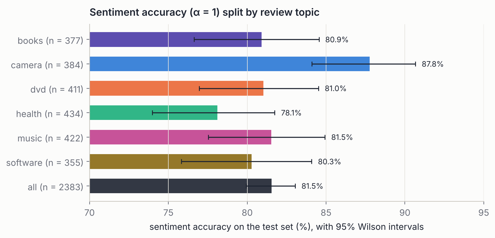
wilson_interval, normal_interval, mcnemar_exact
def wilson_interval(k, n, z=1.959964):
"""95% Wilson score interval for a binomial proportion k / n."""
p = k / n
centre = (p + z * z / (2 * n)) / (1 + z * z / n)
half = z * math.sqrt(p * (1 - p) / n + z * z / (4 * n * n)) / (1 + z * z / n)
return centre - half, centre + half
def normal_interval(k, n, z=1.959964):
"""95% normal-approximation (Wald) interval, p +/- z sqrt(p(1-p)/n)."""
p = k / n
h = z * math.sqrt(p * (1 - p) / n)
return p - h, p + h
def mcnemar_exact(true_labels, guesses_a, guesses_b):
"""
Exact McNemar test for two classifiers evaluated on the same documents.
b = documents A gets right and B gets wrong, c = the reverse. Under H0 (equal accuracy)
b ~ Binomial(b + c, 1/2). Returns b, c and the two-sided p-value.
"""
b = sum(ga == t and gb != t for t, ga, gb in zip(true_labels, guesses_a, guesses_b))
c = sum(ga != t and gb == t for t, ga, gb in zip(true_labels, guesses_a, guesses_b))
n = b + c
if n == 0:
return b, c, 1.0
k = min(b, c)
tail = sum(math.comb(n, i) for i in range(0, k + 1)) / 2 ** n
return b, c, min(1.0, 2 * tail)3.2Choosing the smoothing parameter
α is a hyperparameter, so it is chosen by 5-fold cross-validation on the training set only; the test set is not used to pick it.
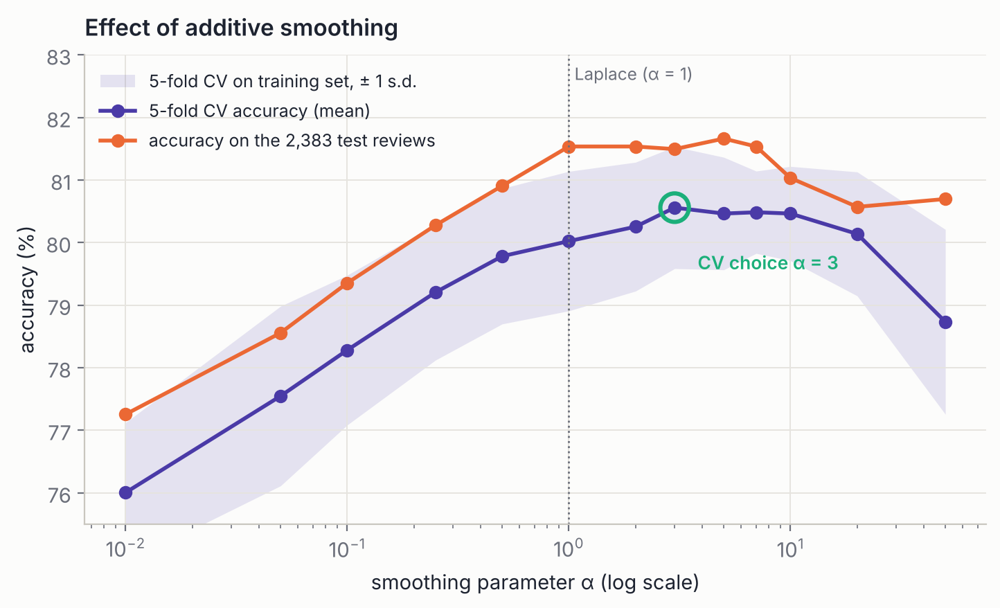
| α | 5-fold CV accuracy (mean ± s.d.) | test accuracy |
|---|---|---|
| 0.01 | 76.00% ± 1.12 | 77.26% |
| 0.05 | 77.55% ± 1.44 | 78.56% |
| 0.1 | 78.28% ± 1.20 | 79.35% |
| 0.25 | 79.20% ± 1.08 | 80.28% |
| 0.5 | 79.78% ± 1.08 | 80.91% |
| 1 | 80.02% ± 1.11 | 81.54% |
| 2 | 80.25% ± 1.03 | 81.54% |
| 3 | 80.56% ± 0.97 | 81.49% |
| 5 | 80.46% ± 0.90 | 81.66% |
| 7 | 80.48% ± 0.66 | 81.54% |
| 10 | 80.46% ± 0.75 | 81.03% |
| 20 | 80.14% ± 0.99 | 80.57% |
| 50 | 78.73% ± 1.48 | 80.70% |
Very small α (0.01) overfits: rare words get extreme probabilities, and accuracy falls to 77%. Very large α (50) washes out the evidence. Cross-validation picks α = 3, with test accuracy 81.49%, practically the same as Laplace smoothing. To test whether the two settings really differ, I use the exact McNemar test, which only looks at the reviews where the two classifiers disagree: \(b\) = right with α = 3 and wrong with α = 1, \(c\) = the reverse. Under "equal accuracy", \(b \sim \text{Binomial}(b + c, \tfrac12)\). Here \(b = 25\), \(c = 26\), p = 1.00: no evidence of a difference. Anything from α ≈ 1 to 10 is a good choice. The rest of the page uses α = 1 unless stated.
Error analysis
440 of the 2,383 test reviews are misclassified. Below are the short reviews (≤ 30 words) where the model was most confident in the wrong answer, plus two long ones.
Each word is coloured by its log-likelihood ratio \(\log P(w \mid \text{pos}) - \log P(w \mid \text{neg})\): pushes towards positive pushes towards negative (stronger colour = stronger evidence; hover a word on the webpage to see its value). The log-odds in each header is the sum over all words plus the prior log-ratio; the model predicts positive when it is above 0.
The single most negative word in the vocabulary, waste, appears here inside a negation ("not a waste"). A bag-of-words model cannot see that not flips it, and not is itself a negative word. The name brad happens to occur mostly in negative reviews. "good job" is not enough to compensate.
The text reads as mildly negative, yet the review is labelled positive: the star rating and the words disagree. The misspelling diappointed was never seen in training, so it gets the 'unknown' probability. Ordinary software words (training, versions, buy) lean negative because software complaints are common.
Negation again, in the opposite direction: impressed is a strong positive word and appears twice, both times after not. Words from the book title (wild at heart, companion) also count as positive evidence.
Almost certainly a labelling error. The text is plainly positive ("beautifully done"), and the classifier's answer is the sensible one. Errors like this put a ceiling on any classifier's accuracy on this dataset.
A factual complaint with no strong sentiment words. dim and inadequate are rare, so their evidence is weak, while the product vocabulary (mirror, light, 5x) comes mostly from positive health reviews.
Another review whose text is entirely positive ("awesome", "must have") but whose label is negative; most likely a rating mistake by the reviewer.
A mixed review: "it 's a great a lens , but this is hardly worth the price". The camera vocabulary (lens twice, hood) is strongly positive because most camera reviews are positive, and great outweighs hardly and pay. The model has no notion that the clause after but carries the verdict.
A polite suggestion rather than a complaint, labelled positive. confusing, contents and microsoft are associated with negative software reviews, which is a domain effect, not sentiment.
A long DVD review that praises the series at length (excellent, facets) and only criticises this particular edition at the end ("inexcusable given the price"). Every word adds its log-ratio independently, so 700 mostly favourable words give a log-odds of +44, far beyond what the evidence justifies.
A 1,200-word book review that summarises the book's story in neutral or positive language and gives a lukewarm verdict at the end. Topic words in the omitted middle part (british three times, oxford) dominate the sum. The independence assumption makes the model claim probability ≈ 1 for the wrong class.
- Negation and contrast ("not a waste", "not impressed", "great lens, but hardly worth the price"). Bag-of-words features throw away word order, so the model sees the same evidence as for "a waste" or "impressed".
- Label noise. Several "errors" are reviews whose text clearly disagrees with their label. The classifier is effectively right, and no model trained on these labels can get them all.
- Topic words as sentiment. Product and domain words (lens, microsoft, british, a reviewer's name) carry polarity only because of which products got good or bad reviews. They help on average but mislead when a review goes against the trend for its product.
- No evidence. Factual complaints without sentiment words, and misspellings that are unknown to the vocabulary, give the model very little to go on.
- Overconfidence on long reviews. Independence lets every word vote. In long, mixed reviews hundreds of weakly positive words outvote a short negative verdict, and the posterior saturates at 1.000.
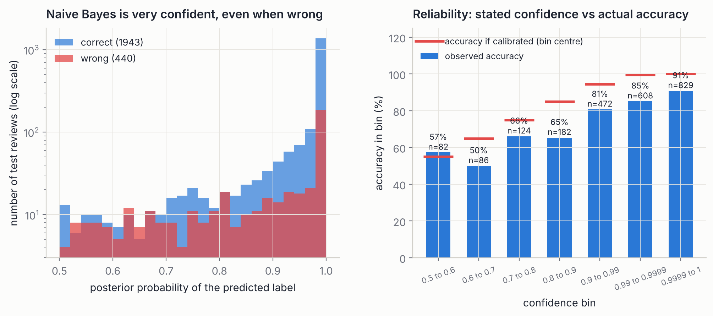
The right panel quantifies the overconfidence. Naive Bayes posteriors are not calibrated probabilities: the model double-counts correlated words (excellent and highly recommend usually appear together), which pushes almost every posterior towards 0 or 1. Accuracy hardly depends on review length (1 to 54 words: 82.1%, 54 to 103 words: 81.3%, 103 to 182 words: 82.5%, 182 to 2644 words: 80.4%). Long reviews give more evidence but also more mixed content.
Optional tasks
All seven optional tasks. Apart from 5.5, everything uses the same nb.py code.
5.1Six-category topic classifier
The same train_nb works unchanged with six classes, since the classes are read from the labels. Only the label column changes
(read_documents(..., label_column=0), or the topics list returned alongside).
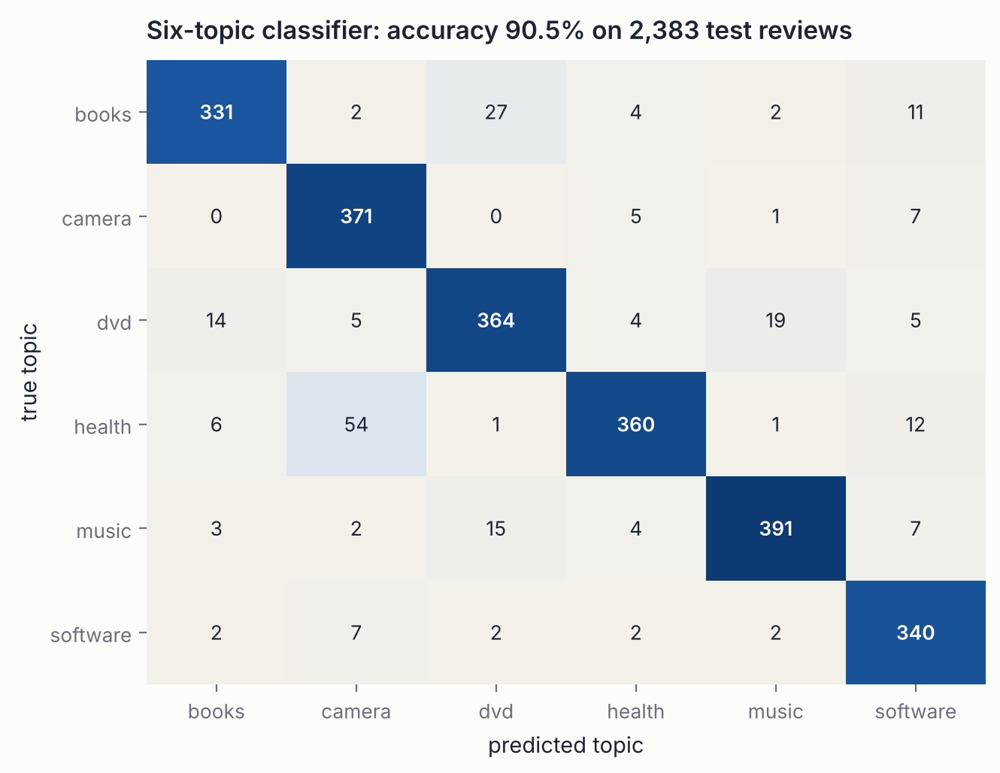
| topic | correct | n | recall | precision |
|---|---|---|---|---|
| books | 331 | 377 | 87.8% | 93.0% |
| camera | 371 | 384 | 96.6% | 84.1% |
| dvd | 364 | 411 | 88.6% | 89.0% |
| health | 360 | 434 | 82.9% | 95.0% |
| music | 391 | 422 | 92.7% | 94.0% |
| software | 340 | 355 | 95.8% | 89.0% |
Topic is far easier than sentiment, because topic is carried by many unambiguous nouns (camera, album, author). The main confusion is health → camera (54 reviews). Many "health" products are electric devices (shavers, trimmers, scales), and reviews of them talk about batteries, chargers and returns just like camera reviews. books ↔ dvd and dvd ↔ music overlap because films are adapted from books and have soundtracks.
5.2Learning curve
The 20% test set is held fixed. Training sets of 2% to 100% of the training portion are drawn at random, five times each, and the test accuracy is averaged.
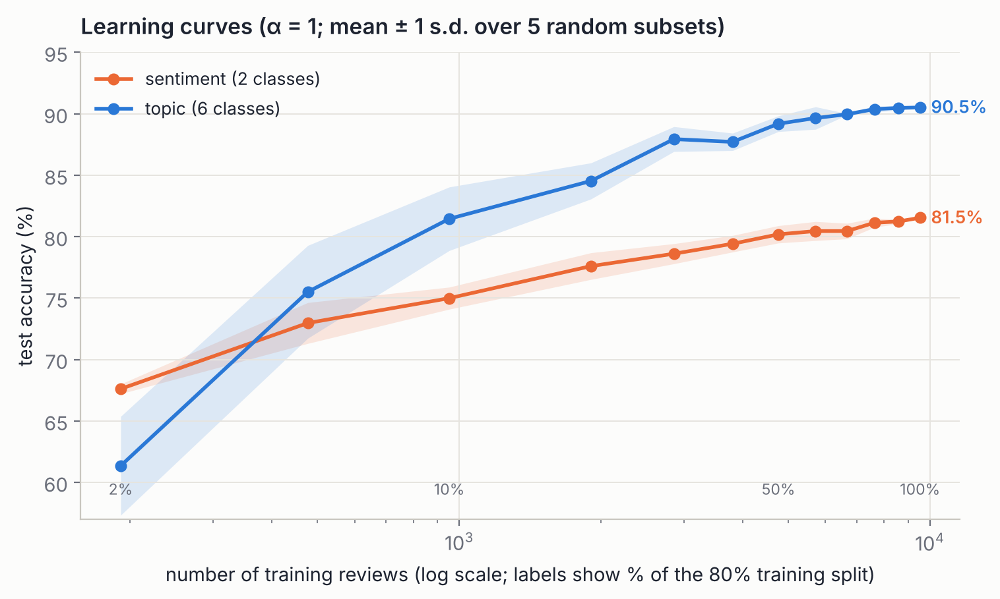
| fraction | training reviews | sentiment accuracy | topic accuracy |
|---|---|---|---|
| 2% | 191 | 67.60% ± 0.40 | 61.34% ± 4.02 |
| 5% | 477 | 72.97% ± 1.66 | 75.50% ± 3.78 |
| 10% | 953 | 74.99% ± 0.90 | 81.45% ± 2.59 |
| 20% | 1906 | 77.60% ± 1.09 | 84.53% ± 1.47 |
| 30% | 2859 | 78.61% ± 0.82 | 87.94% ± 1.01 |
| 40% | 3812 | 79.42% ± 0.68 | 87.71% ± 0.71 |
| 50% | 4766 | 80.18% ± 0.71 | 89.19% ± 0.64 |
| 60% | 5719 | 80.45% ± 0.78 | 89.65% ± 0.91 |
| 70% | 6672 | 80.45% ± 0.63 | 89.96% ± 0.05 |
| 80% | 7625 | 81.13% ± 0.37 | 90.38% ± 0.25 |
| 90% | 8578 | 81.23% ± 0.18 | 90.47% ± 0.18 |
| 100% | 9531 | 81.54% ± 0.00 | 90.52% ± 0.00 |
Both curves are still rising at the full training set, roughly linearly in the logarithm of the data size. Doubling the data from 4,766 to 9,531 reviews adds about 1.4 points for sentiment, so more data would still help, but with diminishing returns. Topic accuracy rises much faster at first: a few hundred reviews already identify the topic nouns, while sentiment needs many examples of each evaluative word in each domain.
5.3The most informative words
A word's evidence for positive over negative is its log-likelihood ratio, the exact amount it adds to the log-odds when it occurs:
\[ s(w) = \log P(w \mid \text{pos}) - \log P(w \mid \text{neg}). \]
With α = 1 the extremes are dominated by rare words that occur in only one class by chance, mostly names: positive pluto, lieutenant, powell, maizon, flaxseed, spider-man, picard, jakes, onenote, snapfire, photographers, snack; negative seagal, nis, lisbon, blah, gnr, rip-off, e18, dennett, trite, bras, uninstalled. As the handout hints, a much larger smoothing value fixes this. With α = 50, a word needs many occurrences before its ratio moves far from 0, so frequent, consistently polar words rise to the top (I also skip words seen fewer than 20 times).
informative_words and print_top_nb
def informative_words(model, a="pos", b="neg", min_count=10):
"""
Rank words by the log-likelihood ratio log P(w | a) - log P(w | b).
Large positive values are strong evidence for a, large negative for b.
Rare words get extreme ratios by chance, so words seen fewer than
min_count times in total are skipped (a large alpha has a similar effect).
"""
la, lb = model["log_likelihood"][a], model["log_likelihood"][b]
out = []
for w in la:
n = model["word_counts"][a][w] + model["word_counts"][b][w]
if n >= min_count:
out.append((w, la[w] - lb[w], n))
return sorted(out, key=lambda t: t[1], reverse=True)
def print_top_nb(k, model, a="pos", b="neg", min_count=10):
ranked = informative_words(model, a, b, min_count)
print(f"top {k} words for {a}:", ", ".join(w for w, _, _ in ranked[:k]))
print(f"top {k} words for {b}:", ", ".join(w for w, _, _ in ranked[::-1][:k]))
return ranked[:k], ranked[::-1][:k]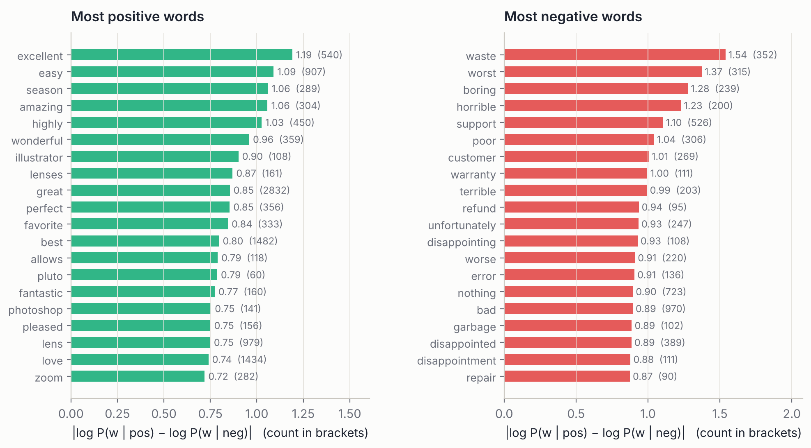
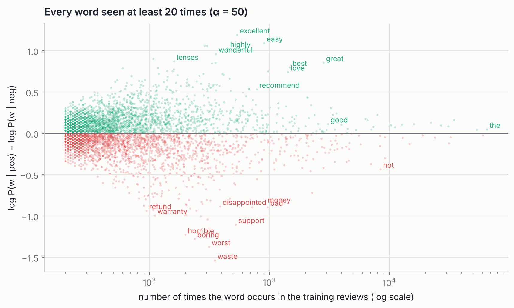
The positive list is mostly evaluative (excellent, easy, amazing, highly, wonderful, perfect, favorite), plus domain words from well-liked product groups (lenses, illustrator, photoshop, season, as in a TV series box set). The negative list is a mix of evaluative words (waste, worst, boring, horrible, poor) and the vocabulary of things going wrong after a purchase: support, customer, warranty, refund, repair, error. not and nothing are clearly negative on their own, which explains the "not bad" sanity check.
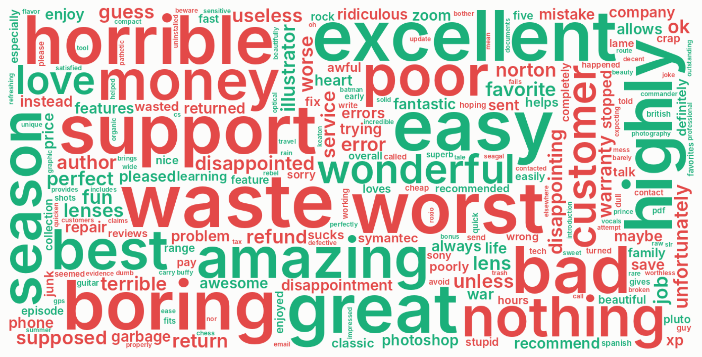
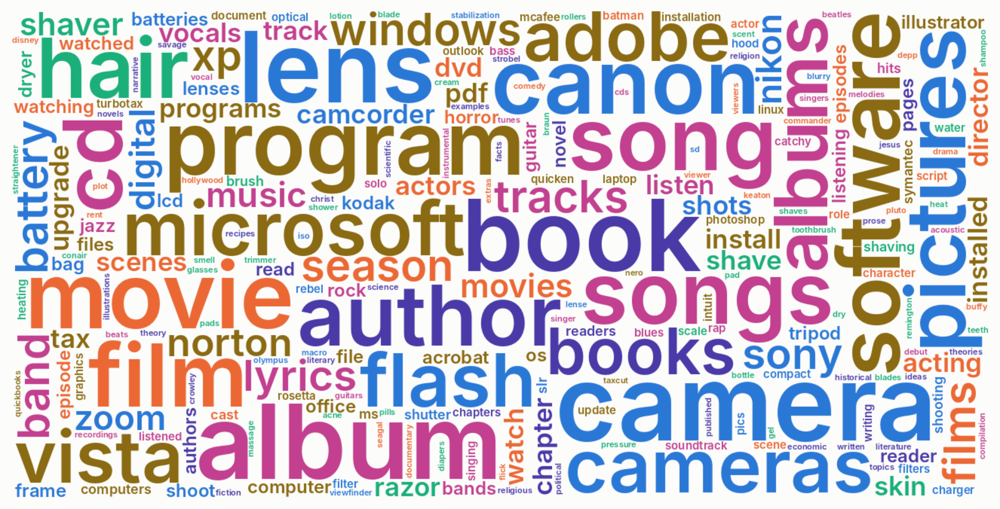
5.4Naive Bayes for numerical data (Iris)
For numerical features, each word probability is replaced by a Gaussian density per (class, feature), with the maximum-likelihood mean and variance:
\[ \log P(\mathbf x, c) = \log P(c) + \sum_{j=1}^{4} \Big[ -\tfrac12\log(2\pi\sigma_{cj}^2) - \frac{(x_j - \mu_{cj})^2}{2\sigma_{cj}^2} \Big]. \]
I used the 150-flower Iris file from Assignment 3 and the handout's split code: 40 random flowers for evaluation (seed 572) and 110 for training.
| class | prior | sepal length μ / σ | sepal width μ / σ | petal length μ / σ | petal width μ / σ |
|---|---|---|---|---|---|
| setosa | 0.364 | 5.010 / 0.330 | 3.410 / 0.375 | 1.468 / 0.168 | 0.235 / 0.088 |
| versicolor | 0.345 | 5.984 / 0.503 | 2.816 / 0.292 | 4.316 / 0.472 | 1.334 / 0.202 |
| virginica | 0.291 | 6.572 / 0.570 | 2.953 / 0.277 | 5.544 / 0.538 | 2.062 / 0.290 |
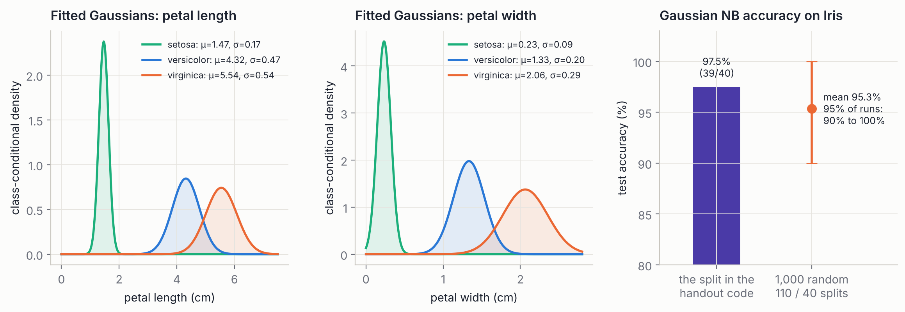
Accuracy is 97.5% (39/40; one virginica called versicolor). Forty flowers is a small sample, so I repeated the random 110 / 40 split 1,000 times. Mean accuracy is 95.3% (s.d. 3.0 points); 95% of runs fall between 90% and 100%. Setosa is always separated. The few errors are versicolor/virginica flowers in the overlap of their petal Gaussians.
train_gaussian_nb, score_gaussian, classify_gaussian
def train_gaussian_nb(X, y):
"""
Numerical Naive Bayes: one Gaussian per (class, feature) with the maximum-likelihood
mean and variance (dividing by N, not N - 1), plus the class priors.
"""
X = np.asarray(X, dtype=float)
classes = sorted(set(y))
y = np.asarray(y)
params = {}
for c in classes:
Xc = X[y == c]
params[c] = {"log_prior": math.log(len(Xc) / len(X)),
"mean": Xc.mean(axis=0), "var": Xc.var(axis=0)}
return {"classes": classes, "params": params}
def score_gaussian(x, label, model):
"""log P(label) + sum_j log N(x_j ; mu_cj, sigma_cj^2)."""
p = model["params"][label]
x = np.asarray(x, dtype=float)
log_pdf = -0.5 * np.log(2 * np.pi * p["var"]) - (x - p["mean"]) ** 2 / (2 * p["var"])
return p["log_prior"] + float(log_pdf.sum())
def classify_gaussian(X, model):
return [max(model["classes"], key=lambda c: score_gaussian(x, c, model)) for x in np.asarray(X)]5.5Classifiers from scikit-learn
The only part that uses a toolkit, as the handout allows. I used the handout's TF-IDF pipeline with a linear SVM, and the MLP with SelectKBest(k=1000)
(with early stopping). Both are trained on the same 9,531 reviews and tested on the same 2,383. The McNemar column compares each with my α = 1 Naive Bayes:
"b / c" = reviews only the toolkit model gets right / only Naive Bayes gets right.
| model | accuracy | 95% CI | McNemar vs NB (b / c) | training time |
|---|---|---|---|---|
| LinearSVC (TF-IDF) | 85.23% | [83.7%, 86.6%] | 207 / 119, p = 1.3 × 10-6 | 0.7 s |
| MLP (TF-IDF, 1000 features) | 84.26% | [82.7%, 85.7%] | 217 / 152, p = 8.4 × 10-4 | 3.8 s |
Both are significantly better than plain unigram Naive Bayes (+3.7 and +2.7 points). A discriminative linear model can down-weight correlated words instead of counting them twice,
and TF-IDF reduces the influence of very frequent words. Two checks of my own code: scikit-learn's MultinomialNB(alpha=1) on the same counts reaches the
same accuracy (81.54%) and agrees with nb.py on 99.92% of test reviews (the 2 differences come
from how words unseen in training are handled). GaussianNB gives the same Iris predictions as my Gaussian version, with identical means and variances
(differences below 10−8).
train_sklearn (from experiments.py)
def train_sklearn(docs, labels, clf, k="all"):
vec = TfidfVectorizer(preprocessor=lambda x: x, tokenizer=lambda x: x, token_pattern=None, lowercase=False)
sel = SelectKBest(k=k)
pipeline = make_pipeline(vec, sel, clf)
pipeline.fit(docs, labels)
return pipeline
def classify_documents_sklearn(docs, model):
return model.predict(docs)5.6Improving the features
Two changes, each applied to both the training and test reviews, with α re-chosen by 5-fold cross-validation on the training set:
- Negation marking (Pang et al., 2002): after not, no, never, n't, …, every token up to the next punctuation mark (or but) gets a
NOT_prefix. Example:i did n't NOT_like NOT_the NOT_plot , but the acting is not NOT_bad NOT_at NOT_all - Bigrams: every pair of adjacent words is added as an extra feature (
not__bad,highly__recommend,waste__of).
mark_negation and add_bigrams
def mark_negation(doc):
"""
Pang et al. (2002) trick: after a negation word, prefix every token with NOT_
until the next punctuation mark (or 'but'), so 'not good' becomes 'not NOT_good'.
"""
out, negating = [], False
for w in doc:
if w in CLAUSE_END:
negating = False
out.append(w)
elif negating:
out.append("NOT_" + w)
else:
out.append(w)
if w in NEGATORS or w.endswith("n't"):
negating = True
return out
def add_bigrams(doc):
"""Unigrams plus every adjacent word pair, written 'w1__w2'."""
return doc + [doc[i] + "__" + doc[i + 1] for i in range(len(doc) - 1)]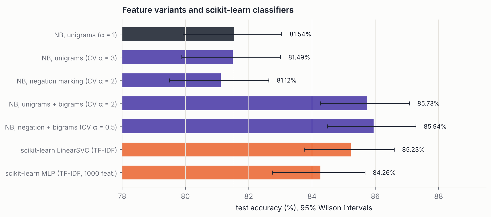
| Naive Bayes features | α | vocabulary | test accuracy | 95% CI | McNemar vs baseline (b / c) |
|---|---|---|---|---|---|
| unigrams (baseline) | 1 | 52,392 | 81.54% | [79.9%, 83.0%] | n/a |
| unigrams | 3 (CV) | 52,392 | 81.49% | [79.9%, 83.0%] | 25 / 26, p = 1.000 |
| negation marking | 2 (CV) | 63,255 | 81.12% | [79.5%, 82.6%] | 114 / 124, p = 0.560 |
| unigrams + bigrams | 2 (CV) | 484,472 | 85.73% | [84.3%, 87.1%] | 148 / 48, p = 4.7 × 10-13 |
| negation + bigrams | 0.5 (CV) | 530,392 | 85.94% | [84.5%, 87.3%] | 175 / 70, p = 1.5 × 10-11 |
- Negation marking alone does not help (81.12%, p = 0.56). It fixes "not bad", but it also splits every word into two rarer versions (good and NOT_good), so each is estimated from less data. Many negated words are not polar anyway.
- Bigrams give a large, highly significant gain: +4.2 points (p = 4.7 × 10-13; 148 reviews fixed against 48 broken). They capture short phrases whose meaning differs from their words. With α = 2, worth alone has s(w) = +0.17 but not worth has −2.88; problems is −0.31 but no problems is +0.64; highly recommend (+2.23) is much stronger than recommend (+0.60).
- Negation + bigrams is the best model at 85.94%. Bigrams supply the extra data that negation marking was missing. This Naive Bayes, written from scratch, matches the TF-IDF linear SVM (85.2%); their intervals overlap almost completely.
5.7Domain sensitivity
Each topic is split 80 / 20 on its own (about 1,600 training and 400 test reviews per topic). A Naive Bayes model is trained on each topic and tested on every topic's test set.
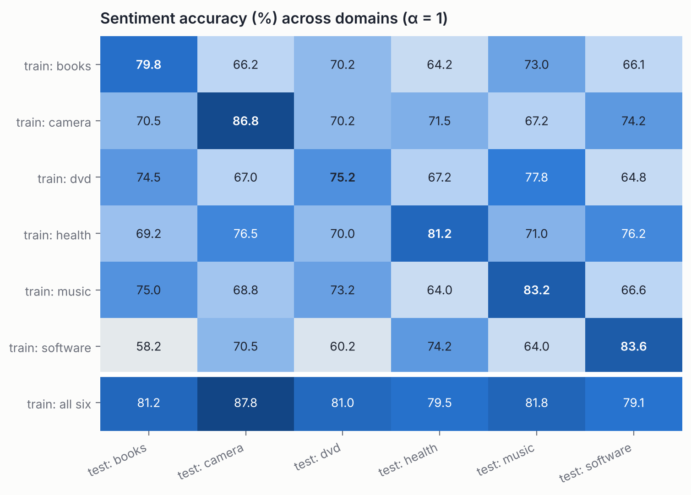
- A camera classifier applied to book reviews loses 9.3 points (79.8% → 70.5%). Going the other way loses 20.5 points (86.8% → 66.2%). Both drops are highly significant on the same 400 test reviews. Every off-diagonal cell is below its diagonal: sentiment vocabulary is domain-specific. "Long battery life" and "sharp" are praise for a camera; "long" and "predictable" are criticism for a novel. One plausible reason for the asymmetry: camera reviews use short, direct evaluative words that book reviews rarely use, while book reviews spend many words on plot and author, so a book model has learned little that applies to a product.
- Related domains transfer better. dvd → music (77.8%) and music → dvd (73.2%), health ↔ camera, and health ↔ software are the best off-diagonal pairs. All are products judged on similar terms (entertainment, or electronic devices that break and need support). Software → books (58.2%) is the worst pair, barely above chance.
- Pooling all domains (bottom row, six times the data) beats the in-domain model for books, camera and dvd. It is slightly worse for health, music and software, whose own vocabulary is diluted by the other domains. This is the trade-off the Blitzer et al. paper studies: more data versus more relevant data.
Python code
Three files. nb.py is the Naive Bayes implementation and the statistics, written without any machine learning toolkit.
experiments.py runs every experiment and writes results.json; scikit-learn appears only in its marked section 5.5.
make_figures.py draws the figures. With all_sentiment_shuffled.txt and bezdekIris.data in the same
folder: python3 experiments.py && python3 make_figures.py (about three minutes). Source files:
nb.py · experiments.py · make_figures.py · results.json.
nb.py: complete module
"""
SYDE 572 - Assignment 4
Multinomial Naive Bayes for text, written from scratch (no machine learning toolkit),
plus the statistics used to evaluate it and a Gaussian Naive Bayes for numerical data.
Model
P(c | d) proportional to P(c) * prod_{w in d} P(w | c)
log P(d, c) = log P(c) + sum_{w in d} log P(w | c)
Estimates (with additive / Laplace smoothing alpha)
P(c) = N_c / N (fraction of training documents in class c)
P(w | c) = (count(w, c) + alpha) / (T_c + alpha (V + 1))
where count(w, c) is how often word w occurs in class-c training documents, T_c is the total
number of tokens in class c and V is the training vocabulary size. The "+ 1" reserves one
extra slot for words never seen in training, so an unseen word gets alpha / (T_c + alpha (V + 1))
and the probabilities over the V known words plus "unknown" still sum to one.
"""
import math
from codecs import open
from collections import Counter
import numpy as np
NEGATORS = {"not", "no", "never", "n't", "cannot", "nothing", "nobody", "none", "nor", "neither", "without"}
CLAUSE_END = {".", ",", "!", "?", ";", ":", "(", ")", "--", "but"}
# ================================================================== data ====
def read_documents(doc_file, label_column=1, with_topics=False):
"""
One review per line: topic polarity id word word word ...
label_column = 1 gives the sentiment label, 0 gives the topic label.
"""
docs, labels, topics = [], [], []
with open(doc_file, encoding="utf-8") as f:
for line in f:
words = line.strip().split()
if len(words) < 3:
continue
docs.append(words[3:])
labels.append(words[label_column])
topics.append(words[0])
if with_topics:
return docs, labels, topics
return docs, labels
def split_80_20(items, fraction=0.80):
split_point = int(fraction * len(items))
return items[:split_point], items[split_point:]
# ============================================================ train / score ====
def train_nb(documents, labels, alpha=1.0):
"""
Estimate the Naive Bayes parameters. Returns a dict with
classes, log_prior[c], log_likelihood[c][w], log_unknown[c], plus the raw counts
so that other quantities (e.g. informative words) can be computed later.
The classes are read from the labels, so any number of categories works.
"""
classes = sorted(set(labels))
doc_counts = Counter(labels)
word_counts = {c: Counter() for c in classes}
for doc, c in zip(documents, labels):
word_counts[c].update(doc)
vocab = set()
for c in classes:
vocab.update(word_counts[c])
V = len(vocab)
n_docs = len(documents)
log_prior, log_likelihood, log_unknown, totals = {}, {}, {}, {}
for c in classes:
log_prior[c] = math.log(doc_counts[c] / n_docs)
total = sum(word_counts[c].values())
totals[c] = total
denom = total + alpha * (V + 1)
log_unknown[c] = math.log(alpha / denom)
log_likelihood[c] = {w: math.log((word_counts[c][w] + alpha) / denom) for w in vocab}
return {"classes": classes, "alpha": alpha, "V": V, "log_prior": log_prior,
"log_likelihood": log_likelihood, "log_unknown": log_unknown,
"word_counts": word_counts, "doc_counts": doc_counts, "totals": totals}
def score_doc_label(document, label, model):
"""log P(document, label) = log P(label) + sum over tokens of log P(token | label)."""
ll = model["log_likelihood"][label]
unk = model["log_unknown"][label]
return model["log_prior"][label] + sum(ll.get(w, unk) for w in document)
def classify_nb(document, model):
"""The label with the highest joint log probability."""
return max(model["classes"], key=lambda c: score_doc_label(document, c, model))
def classify_documents(docs, model):
return [classify_nb(d, model) for d in docs]
def accuracy(true_labels, guessed_labels):
correct = sum(t == g for t, g in zip(true_labels, guessed_labels))
return correct / len(true_labels)
def posterior(document, model):
"""P(c | document) for every class, computed stably with log-sum-exp."""
s = np.array([score_doc_label(document, c, model) for c in model["classes"]])
s = s - s.max()
p = np.exp(s)
return dict(zip(model["classes"], p / p.sum()))
def word_contributions(document, model, a="pos", b="neg"):
"""log P(w | a) - log P(w | b) for every token: how much each word pushes towards a."""
la, lb = model["log_likelihood"][a], model["log_likelihood"][b]
ua, ub = model["log_unknown"][a], model["log_unknown"][b]
return [(w, la.get(w, ua) - lb.get(w, ub)) for w in document]
# ============================================================ statistics ====
def wilson_interval(k, n, z=1.959964):
"""95% Wilson score interval for a binomial proportion k / n."""
p = k / n
centre = (p + z * z / (2 * n)) / (1 + z * z / n)
half = z * math.sqrt(p * (1 - p) / n + z * z / (4 * n * n)) / (1 + z * z / n)
return centre - half, centre + half
def normal_interval(k, n, z=1.959964):
"""95% normal-approximation (Wald) interval, p +/- z sqrt(p(1-p)/n)."""
p = k / n
h = z * math.sqrt(p * (1 - p) / n)
return p - h, p + h
def mcnemar_exact(true_labels, guesses_a, guesses_b):
"""
Exact McNemar test for two classifiers evaluated on the same documents.
b = documents A gets right and B gets wrong, c = the reverse. Under H0 (equal accuracy)
b ~ Binomial(b + c, 1/2). Returns b, c and the two-sided p-value.
"""
b = sum(ga == t and gb != t for t, ga, gb in zip(true_labels, guesses_a, guesses_b))
c = sum(ga != t and gb == t for t, ga, gb in zip(true_labels, guesses_a, guesses_b))
n = b + c
if n == 0:
return b, c, 1.0
k = min(b, c)
tail = sum(math.comb(n, i) for i in range(0, k + 1)) / 2 ** n
return b, c, min(1.0, 2 * tail)
def cross_validate_alpha(docs, labels, alphas, k=5):
"""k-fold cross-validation accuracy on the training set for each smoothing value."""
n = len(docs)
edges = np.linspace(0, n, k + 1).astype(int)
res = {a: [] for a in alphas}
for f in range(k):
lo, hi = edges[f], edges[f + 1]
trd, trl = docs[:lo] + docs[hi:], labels[:lo] + labels[hi:]
vad, val = docs[lo:hi], labels[lo:hi]
for a in alphas:
m = train_nb(trd, trl, alpha=a)
res[a].append(accuracy(val, classify_documents(vad, m)))
return {a: (float(np.mean(v)), float(np.std(v, ddof=1))) for a, v in res.items()}
# ======================================================== informative words ====
def informative_words(model, a="pos", b="neg", min_count=10):
"""
Rank words by the log-likelihood ratio log P(w | a) - log P(w | b).
Large positive values are strong evidence for a, large negative for b.
Rare words get extreme ratios by chance, so words seen fewer than
min_count times in total are skipped (a large alpha has a similar effect).
"""
la, lb = model["log_likelihood"][a], model["log_likelihood"][b]
out = []
for w in la:
n = model["word_counts"][a][w] + model["word_counts"][b][w]
if n >= min_count:
out.append((w, la[w] - lb[w], n))
return sorted(out, key=lambda t: t[1], reverse=True)
def print_top_nb(k, model, a="pos", b="neg", min_count=10):
ranked = informative_words(model, a, b, min_count)
print(f"top {k} words for {a}:", ", ".join(w for w, _, _ in ranked[:k]))
print(f"top {k} words for {b}:", ", ".join(w for w, _, _ in ranked[::-1][:k]))
return ranked[:k], ranked[::-1][:k]
# ========================================================= feature variants ====
def mark_negation(doc):
"""
Pang et al. (2002) trick: after a negation word, prefix every token with NOT_
until the next punctuation mark (or 'but'), so 'not good' becomes 'not NOT_good'.
"""
out, negating = [], False
for w in doc:
if w in CLAUSE_END:
negating = False
out.append(w)
elif negating:
out.append("NOT_" + w)
else:
out.append(w)
if w in NEGATORS or w.endswith("n't"):
negating = True
return out
def add_bigrams(doc):
"""Unigrams plus every adjacent word pair, written 'w1__w2'."""
return doc + [doc[i] + "__" + doc[i + 1] for i in range(len(doc) - 1)]
# =================================================== Gaussian Naive Bayes ====
def train_gaussian_nb(X, y):
"""
Numerical Naive Bayes: one Gaussian per (class, feature) with the maximum-likelihood
mean and variance (dividing by N, not N - 1), plus the class priors.
"""
X = np.asarray(X, dtype=float)
classes = sorted(set(y))
y = np.asarray(y)
params = {}
for c in classes:
Xc = X[y == c]
params[c] = {"log_prior": math.log(len(Xc) / len(X)),
"mean": Xc.mean(axis=0), "var": Xc.var(axis=0)}
return {"classes": classes, "params": params}
def score_gaussian(x, label, model):
"""log P(label) + sum_j log N(x_j ; mu_cj, sigma_cj^2)."""
p = model["params"][label]
x = np.asarray(x, dtype=float)
log_pdf = -0.5 * np.log(2 * np.pi * p["var"]) - (x - p["mean"]) ** 2 / (2 * p["var"])
return p["log_prior"] + float(log_pdf.sum())
def classify_gaussian(X, model):
return [max(model["classes"], key=lambda c: score_gaussian(x, c, model)) for x in np.asarray(X)]
if __name__ == "__main__":
import os
here = os.path.dirname(os.path.abspath(__file__))
all_docs, all_labels = read_documents(os.path.join(here, "all_sentiment_shuffled.txt"))
train_docs, eval_docs = split_80_20(all_docs)
train_labels, eval_labels = split_80_20(all_labels)
model = train_nb(train_docs, train_labels, alpha=1.0)
for doc in (["great"], ["bad"], ["a", "top-quality", "performance"]):
print(doc, {c: math.exp(score_doc_label(doc, c, model)) for c in model["classes"]}, classify_nb(doc, model))
guesses = classify_documents(eval_docs, model)
k = sum(g == t for g, t in zip(guesses, eval_labels))
print("accuracy", accuracy(eval_labels, guesses), "95% CI", wilson_interval(k, len(eval_labels)))
experiments.py
"""
SYDE 572 - Assignment 4
Runs every experiment in the report and saves the numbers to results.json
(the figures are drawn from that file by make_figures.py).
python3 experiments.py # about two minutes
python3 make_figures.py
Everything except the section marked "scikit-learn" uses only the code in nb.py.
"""
import json
import math
import os
import random
import time
from collections import Counter
import numpy as np
from nb import (read_documents, split_80_20, train_nb, score_doc_label, classify_nb,
classify_documents, accuracy, posterior, word_contributions, wilson_interval,
normal_interval, mcnemar_exact, cross_validate_alpha, informative_words,
print_top_nb, mark_negation, add_bigrams, train_gaussian_nb, classify_gaussian)
HERE = os.path.dirname(os.path.abspath(__file__))
DATA = os.path.join(HERE, "all_sentiment_shuffled.txt")
IRIS = os.path.join(HERE, "bezdekIris.data")
R = {}
t0 = time.time()
def summary(true, guess):
k = sum(t == g for t, g in zip(true, guess))
n = len(true)
return {"correct": k, "n": n, "accuracy": k / n,
"wilson": wilson_interval(k, n), "normal": normal_interval(k, n)}
# ============================================================ data and split ====
all_docs, all_labels, all_topics = read_documents(DATA, with_topics=True)
train_docs, eval_docs = split_80_20(all_docs)
train_labels, eval_labels = split_80_20(all_labels)
train_topics, eval_topics = split_80_20(all_topics)
R["data"] = {"n_docs": len(all_docs), "n_train": len(train_docs), "n_eval": len(eval_docs),
"train_label_counts": dict(Counter(train_labels)), "eval_label_counts": dict(Counter(eval_labels)),
"topic_label_counts": {t: dict(Counter(l for l, tt in zip(all_labels, all_topics) if tt == t))
for t in sorted(set(all_topics))},
"tokens_total": sum(len(d) for d in all_docs),
"median_len": float(np.median([len(d) for d in all_docs])),
"mean_len": float(np.mean([len(d) for d in all_docs]))}
# ============================================================ baseline (alpha = 1) ====
model = train_nb(train_docs, train_labels, alpha=1.0)
R["vocab_size"] = model["V"]
R["priors"] = {c: math.exp(model["log_prior"][c]) for c in model["classes"]}
sanity = {}
for doc in (["great"], ["bad"], ["excellent"], ["waste"], ["a", "top-quality", "performance"],
["not", "bad"], ["the", "movie"]):
key = " ".join(doc)
sanity[key] = {"p": {c: math.exp(score_doc_label(doc, c, model)) for c in model["classes"]},
"logp": {c: score_doc_label(doc, c, model) for c in model["classes"]},
"guess": classify_nb(doc, model), "posterior": posterior(doc, model)}
R["sanity"] = sanity
base_guess = classify_documents(eval_docs, model)
R["baseline"] = summary(eval_labels, base_guess)
R["baseline"]["confusion"] = {t: {g: sum(1 for a, b in zip(eval_labels, base_guess) if a == t and b == g)
for g in model["classes"]} for t in model["classes"]}
R["baseline"]["by_topic"] = {}
for tp in sorted(set(eval_topics)):
idx = [i for i, x in enumerate(eval_topics) if x == tp]
R["baseline"]["by_topic"][tp] = summary([eval_labels[i] for i in idx], [base_guess[i] for i in idx])
print("baseline", R["baseline"]["accuracy"], round(time.time() - t0, 1), "s")
# ============================================================ smoothing ====
alphas = [0.01, 0.05, 0.1, 0.25, 0.5, 1, 2, 3, 5, 7, 10, 20, 50]
cv = cross_validate_alpha(train_docs, train_labels, alphas, k=5)
test_acc = {}
for a in alphas:
m = train_nb(train_docs, train_labels, alpha=a)
test_acc[a] = accuracy(eval_labels, classify_documents(eval_docs, m))
best_alpha = max(alphas, key=lambda a: cv[a][0])
best_model = train_nb(train_docs, train_labels, alpha=best_alpha)
best_guess = classify_documents(eval_docs, best_model)
R["smoothing"] = {"alphas": alphas, "cv_mean": [cv[a][0] for a in alphas], "cv_sd": [cv[a][1] for a in alphas],
"test": [test_acc[a] for a in alphas], "best_alpha_cv": best_alpha,
"best": summary(eval_labels, best_guess),
"mcnemar_vs_alpha1": mcnemar_exact(eval_labels, best_guess, base_guess)}
print("smoothing done, best alpha", best_alpha, round(time.time() - t0, 1), "s")
# ============================================================ error analysis ====
errors = []
for i, (d, t, g) in enumerate(zip(eval_docs, eval_labels, base_guess)):
post = posterior(d, model)
if g != t:
errors.append({"i": i, "true": t, "guess": g, "p_wrong": float(post[g]), "len": len(d),
"topic": eval_topics[i]})
R["errors"] = {"n": len(errors), "by_true": dict(Counter(e["true"] for e in errors))}
conf = [max(posterior(d, model).values()) for d in eval_docs]
correct_flags = [g == t for g, t in zip(base_guess, eval_labels)]
bins = [0.5, 0.6, 0.7, 0.8, 0.9, 0.99, 0.9999, 1.0000001]
calib = []
for lo, hi in zip(bins[:-1], bins[1:]):
sel = [c for c, p in zip(correct_flags, conf) if lo <= p < hi]
calib.append({"lo": lo, "hi": min(hi, 1.0), "n": len(sel), "acc": (sum(sel) / len(sel)) if sel else None})
R["calibration"] = calib
R["confidence"] = {"correct": [c for c, f in zip(conf, correct_flags) if f], "wrong": [c for c, f in zip(conf, correct_flags) if not f]}
lens = np.array([len(d) for d in eval_docs])
qs = np.quantile(lens, [0, 0.25, 0.5, 0.75, 1.0])
R["acc_by_length"] = []
for lo, hi in zip(qs[:-1], qs[1:]):
sel = [f for f, L in zip(correct_flags, lens) if lo <= L <= hi]
R["acc_by_length"].append({"lo": int(lo), "hi": int(hi), "n": len(sel), "acc": sum(sel) / len(sel)})
short = sorted([e for e in errors if e["len"] <= 30], key=lambda e: -e["p_wrong"])
long_ = sorted([e for e in errors if e["len"] > 30], key=lambda e: -e["p_wrong"])
picked = short[:8] + long_[:2]
R["error_examples"] = []
for e in picked:
d = eval_docs[e["i"]]
R["error_examples"].append({**e, "doc": d, "contrib": word_contributions(d, model, "pos", "neg"),
"logodds_prior": model["log_prior"]["pos"] - model["log_prior"]["neg"]})
# ============================================================ topic classifier ====
topic_model = train_nb(train_docs, train_topics, alpha=1.0)
topic_guess = classify_documents(eval_docs, topic_model)
R["topic"] = summary(eval_topics, topic_guess)
R["topic"]["classes"] = topic_model["classes"]
R["topic"]["confusion"] = [[sum(1 for a, b in zip(eval_topics, topic_guess) if a == t and b == g)
for g in topic_model["classes"]] for t in topic_model["classes"]]
print("topic", R["topic"]["accuracy"], round(time.time() - t0, 1), "s")
# ============================================================ learning curve ====
fracs = [0.02, 0.05, 0.1, 0.2, 0.3, 0.4, 0.5, 0.6, 0.7, 0.8, 0.9, 1.0]
rng = random.Random(572)
lc = {"fracs": fracs, "sent_mean": [], "sent_sd": [], "topic_mean": [], "topic_sd": [], "n_train": []}
idx_all = list(range(len(train_docs)))
for f in fracs:
n = int(round(f * len(train_docs)))
reps = 1 if f == 1.0 else 5
s_acc, t_acc = [], []
for _ in range(reps):
idx = rng.sample(idx_all, n) if f < 1.0 else idx_all
d = [train_docs[i] for i in idx]
m_s = train_nb(d, [train_labels[i] for i in idx], alpha=1.0)
m_t = train_nb(d, [train_topics[i] for i in idx], alpha=1.0)
s_acc.append(accuracy(eval_labels, classify_documents(eval_docs, m_s)))
t_acc.append(accuracy(eval_topics, classify_documents(eval_docs, m_t)))
lc["n_train"].append(n)
lc["sent_mean"].append(float(np.mean(s_acc)))
lc["sent_sd"].append(float(np.std(s_acc, ddof=1)) if reps > 1 else 0.0)
lc["topic_mean"].append(float(np.mean(t_acc)))
lc["topic_sd"].append(float(np.std(t_acc, ddof=1)) if reps > 1 else 0.0)
R["learning_curve"] = lc
print("learning curve", round(time.time() - t0, 1), "s")
# ============================================================ informative words ====
info_model = train_nb(train_docs, train_labels, alpha=50.0)
ranked = informative_words(info_model, "pos", "neg", min_count=20)
top_pos, top_neg = print_top_nb(25, info_model, "pos", "neg", min_count=20)
R["informative"] = {"alpha": 50.0, "min_count": 20, "top_pos": top_pos, "top_neg": top_neg,
"all": [(w, s, n) for w, s, n in ranked]}
raw_ranked = informative_words(model, "pos", "neg", min_count=1)
R["informative_alpha1_raw"] = {"top_pos": raw_ranked[:12], "top_neg": raw_ranked[::-1][:12]}
# words that characterise each topic: log P(w | topic) - log P(w | all other topics)
topic_words = {}
for tp in topic_model["classes"]:
rest = [d for d, t in zip(train_docs, train_topics) if t != tp]
inside = [d for d, t in zip(train_docs, train_topics) if t == tp]
m2 = train_nb(inside + rest, ["in"] * len(inside) + ["out"] * len(rest), alpha=50.0)
topic_words[tp] = [(w, s, n) for w, s, n in informative_words(m2, "in", "out", min_count=20)[:80]]
R["topic_words"] = topic_words
# ============================================================ feature variants ====
variants = {"unigrams": lambda d: d, "negation marking": mark_negation,
"unigrams + bigrams": add_bigrams, "negation + bigrams": lambda d: add_bigrams(mark_negation(d))}
R["features"] = {}
var_guess = {}
for name, fn in variants.items():
trd = [fn(d) for d in train_docs]
evd = [fn(d) for d in eval_docs]
cvv = cross_validate_alpha(trd, train_labels, [0.1, 0.25, 0.5, 1, 2, 3, 5], k=5)
a_best = max(cvv, key=lambda a: cvv[a][0])
out = {}
for a in (1.0, a_best):
m = train_nb(trd, train_labels, alpha=a)
g = classify_documents(evd, m)
out[str(a)] = summary(eval_labels, g)
if a == a_best:
var_guess[name] = g
out[str(a)]["vocab"] = m["V"]
R["features"][name] = {"alpha_cv": a_best, "cv": {str(k): v for k, v in cvv.items()}, "results": out,
"mcnemar_vs_unigrams_alpha1": mcnemar_exact(eval_labels, var_guess[name], base_guess)}
print("variant", name, a_best, out[str(a_best)]["accuracy"], round(time.time() - t0, 1), "s")
R["negation_example"] = " ".join(mark_negation("i did n't like the plot , but the acting is not bad at all".split()))
# ============================================================ domain sensitivity ====
topics = sorted(set(all_topics))
per_topic = {}
for tp in topics:
d = [x for x, t in zip(all_docs, all_topics) if t == tp]
l = [x for x, t in zip(all_labels, all_topics) if t == tp]
(dtr, dte), (ltr, lte) = split_80_20(d), split_80_20(l)
per_topic[tp] = (dtr, ltr, dte, lte)
dom = {"topics": topics, "matrix": [], "n_test": [len(per_topic[t][2]) for t in topics]}
for src in topics:
m = train_nb(per_topic[src][0], per_topic[src][1], alpha=1.0)
dom["matrix"].append([accuracy(per_topic[tgt][3], classify_documents(per_topic[tgt][2], m)) for tgt in topics])
# camera vs books in detail, with intervals and a test
cam, bk = per_topic["camera"], per_topic["books"]
m_cam = train_nb(cam[0], cam[1], alpha=1.0)
m_bk = train_nb(bk[0], bk[1], alpha=1.0)
g_cam_on_bk = classify_documents(bk[2], m_cam)
g_bk_on_bk = classify_documents(bk[2], m_bk)
g_bk_on_cam = classify_documents(cam[2], m_bk)
g_cam_on_cam = classify_documents(cam[2], m_cam)
dom["camera_books"] = {"cam_on_cam": summary(cam[3], g_cam_on_cam), "cam_on_books": summary(bk[3], g_cam_on_bk),
"books_on_books": summary(bk[3], g_bk_on_bk), "books_on_cam": summary(cam[3], g_bk_on_cam),
"mcnemar_books_test": mcnemar_exact(bk[3], g_bk_on_bk, g_cam_on_bk),
"mcnemar_camera_test": mcnemar_exact(cam[3], g_cam_on_cam, g_bk_on_cam),
"n_train_cam": len(cam[0]), "n_train_books": len(bk[0])}
# all-domain model evaluated on each topic's test set (same documents)
m_all = train_nb([x for t in topics for x in per_topic[t][0]], [x for t in topics for x in per_topic[t][1]], alpha=1.0)
dom["all_row"] = [accuracy(per_topic[t][3], classify_documents(per_topic[t][2], m_all)) for t in topics]
R["domain"] = dom
print("domain", round(time.time() - t0, 1), "s")
# ============================================================ Gaussian NB (Iris) ====
X, Y = [], []
with open(IRIS) as fh:
for line in fh:
p = line.strip().split(",")
if len(p) == 5:
X.append([float(v) for v in p[:4]])
Y.append(p[4].replace("Iris-", ""))
X, Y = np.array(X), np.array(Y)
np.random.seed(572)
n_test = 40
eval_part = np.array([False] * len(Y))
for i in np.random.choice(range(len(Y)), replace=False, size=n_test):
eval_part[i] = True
gm = train_gaussian_nb(X[~eval_part], Y[~eval_part])
g_iris = classify_gaussian(X[eval_part], gm)
R["iris"] = {"split": summary(list(Y[eval_part]), g_iris),
"params": {c: {"mean": gm["params"][c]["mean"].round(4).tolist(), "sd": np.sqrt(gm["params"][c]["var"]).round(4).tolist(),
"prior": math.exp(gm["params"][c]["log_prior"])} for c in gm["classes"]},
"confusion": {t: {g: int(sum(1 for a, b in zip(Y[eval_part], g_iris) if a == t and b == g)) for g in gm["classes"]}
for t in gm["classes"]}}
rep = []
rs = np.random.RandomState(0)
for _ in range(1000):
ev = np.zeros(len(Y), bool)
ev[rs.choice(len(Y), n_test, replace=False)] = True
m = train_gaussian_nb(X[~ev], Y[~ev])
rep.append(accuracy(list(Y[ev]), classify_gaussian(X[ev], m)))
R["iris"]["repeated"] = {"mean": float(np.mean(rep)), "sd": float(np.std(rep, ddof=1)),
"q025": float(np.quantile(rep, 0.025)), "q975": float(np.quantile(rep, 0.975)), "runs": 1000}
# ============================================================ scikit-learn ====
# (the only part that uses a machine learning toolkit, as the handout allows)
from sklearn.feature_extraction.text import TfidfVectorizer
from sklearn.feature_selection import SelectKBest
from sklearn.naive_bayes import GaussianNB, MultinomialNB
from sklearn.neural_network import MLPClassifier
from sklearn.pipeline import make_pipeline
from sklearn.svm import LinearSVC
from sklearn.feature_extraction.text import CountVectorizer
def train_sklearn(docs, labels, clf, k="all"):
vec = TfidfVectorizer(preprocessor=lambda x: x, tokenizer=lambda x: x, token_pattern=None, lowercase=False)
sel = SelectKBest(k=k)
pipeline = make_pipeline(vec, sel, clf)
pipeline.fit(docs, labels)
return pipeline
def classify_documents_sklearn(docs, model):
return model.predict(docs)
sk = {}
t1 = time.time()
svc = train_sklearn(train_docs, train_labels, LinearSVC())
g_svc = list(classify_documents_sklearn(eval_docs, svc))
sk["LinearSVC (TF-IDF)"] = {**summary(eval_labels, g_svc), "seconds": time.time() - t1,
"mcnemar_vs_nb": mcnemar_exact(eval_labels, g_svc, base_guess)}
t1 = time.time()
mlp = train_sklearn(train_docs, train_labels, MLPClassifier(random_state=572, max_iter=200, early_stopping=True), k=1000)
g_mlp = list(classify_documents_sklearn(eval_docs, mlp))
sk["MLP (TF-IDF, 1000 features)"] = {**summary(eval_labels, g_mlp), "seconds": time.time() - t1,
"mcnemar_vs_nb": mcnemar_exact(eval_labels, g_mlp, base_guess)}
# scikit-learn's own multinomial NB on raw counts, as a check of nb.py
cv_ = CountVectorizer(preprocessor=lambda x: x, tokenizer=lambda x: x, token_pattern=None, lowercase=False)
Xtr = cv_.fit_transform(train_docs)
Xev = cv_.transform(eval_docs)
mnb = MultinomialNB(alpha=1.0).fit(Xtr, train_labels)
g_mnb = list(mnb.predict(Xev))
sk["MultinomialNB (counts, alpha = 1)"] = {**summary(eval_labels, g_mnb),
"agreement_with_own_nb": float(np.mean([a == b for a, b in zip(g_mnb, base_guess)]))}
gnb = GaussianNB().fit(X[~eval_part], Y[~eval_part])
sk["GaussianNB check (Iris)"] = {"agreement_with_own": float(np.mean(gnb.predict(X[eval_part]) == np.array(g_iris))),
"max_mean_diff": float(max(np.abs(gnb.theta_[i] - gm["params"][c]["mean"]).max() for i, c in enumerate(gnb.classes_))),
"max_var_diff": float(max(np.abs(gnb.var_[i] - gm["params"][c]["var"]).max() for i, c in enumerate(gnb.classes_)))}
R["sklearn"] = sk
print("sklearn", {k: v.get("accuracy") for k, v in sk.items()}, round(time.time() - t0, 1), "s")
with open(os.path.join(HERE, "results.json"), "w") as fh:
json.dump(R, fh, indent=1, default=float)
print("wrote results.json in", round(time.time() - t0, 1), "s")
make_figures.py
"""
SYDE 572 - Assignment 4
Draws every figure in the report from results.json (run experiments.py first).
python3 make_figures.py
"""
import json
import os
import warnings
import numpy as np
import matplotlib
matplotlib.use("Agg")
import matplotlib.pyplot as plt
from matplotlib.colors import LinearSegmentedColormap
warnings.filterwarnings("ignore")
HERE = os.path.dirname(os.path.abspath(__file__))
MEDIA = os.path.join(HERE, "..", "media")
os.makedirs(MEDIA, exist_ok=True)
R = json.load(open(os.path.join(HERE, "results.json")))
INK = "#1d2330"
MUTED = "#6b6f7a"
GRID = "#e6e4df"
SURFACE = "#fcfcfb"
BLUE = "#2a78d6"
ORANGE = "#eb6834"
VIOLET = "#4a3aa7"
AQUA = "#1baf7a"
RED = "#e34948"
LIGHT = "#c9c6bf"
POS, NEG = AQUA, RED
TOPIC_COL = {"books": VIOLET, "camera": BLUE, "dvd": ORANGE, "health": AQUA, "music": "#c2408f", "software": "#8a6a12"}
SEQ = LinearSegmentedColormap.from_list("seq", ["#f4f1ea", "#bcd6f5", "#2a78d6", "#0d3a73"])
plt.rcParams.update({
"font.family": ["Inter", "DejaVu Sans"], "mathtext.fontset": "stixsans", "font.size": 10.5,
"axes.titlesize": 12, "axes.titleweight": "semibold", "axes.titlelocation": "left", "axes.titlepad": 10,
"axes.labelcolor": INK, "axes.edgecolor": LIGHT, "axes.linewidth": 0.8, "axes.facecolor": SURFACE,
"figure.facecolor": SURFACE, "axes.grid": True, "grid.color": GRID, "grid.linewidth": 0.7,
"axes.spines.top": False, "axes.spines.right": False, "xtick.color": MUTED, "ytick.color": MUTED,
"text.color": INK, "legend.frameon": False, "legend.fontsize": 9.5, "savefig.dpi": 200,
"savefig.bbox": "tight", "savefig.facecolor": SURFACE,
})
def save(fig, name):
fig.savefig(os.path.join(MEDIA, name))
plt.close(fig)
print("saved", name)
def heat(ax, M, rows, cols, fmt, cmap=SEQ, vmin=None, vmax=None, hl_diag=False):
M = np.asarray(M, dtype=float)
im = ax.imshow(M, cmap=cmap, vmin=vmin, vmax=vmax, aspect="auto")
hi = np.nanmax(M) if vmax is None else vmax
lo = np.nanmin(M) if vmin is None else vmin
for i in range(M.shape[0]):
for j in range(M.shape[1]):
v = M[i, j]
ax.text(j, i, fmt(v), ha="center", va="center", fontsize=9.5,
color="white" if (v - lo) / (hi - lo + 1e-12) > 0.6 else INK,
weight="semibold" if (hl_diag and i == j) else "normal")
ax.set_xticks(range(len(cols)))
ax.set_xticklabels(cols, fontsize=9.5)
ax.set_yticks(range(len(rows)))
ax.set_yticklabels(rows, fontsize=9.5)
ax.grid(False)
for s in ax.spines.values():
s.set_visible(False)
return im
# ================================================================ smoothing ====
S = R["smoothing"]
a = np.array(S["alphas"])
fig, ax = plt.subplots(figsize=(8.4, 4.4))
cvm, cvs = np.array(S["cv_mean"]) * 100, np.array(S["cv_sd"]) * 100
ax.fill_between(a, cvm - cvs, cvm + cvs, color=VIOLET, alpha=0.13, lw=0, label="5-fold CV on training set, ± 1 s.d.")
ax.semilogx(a, cvm, "-o", color=VIOLET, lw=2, ms=6, label="5-fold CV accuracy (mean)")
ax.semilogx(a, np.array(S["test"]) * 100, "-o", color=ORANGE, lw=2, ms=6, label="accuracy on the 2,383 test reviews")
ib = S["alphas"].index(S["best_alpha_cv"])
ax.scatter([a[ib]], [cvm[ib]], s=220, facecolor="none", edgecolor=AQUA, lw=2.2, zorder=6)
ax.annotate(f"CV choice α = {S['best_alpha_cv']:g}", (a[ib], cvm[ib]), textcoords="offset points", xytext=(12, -32),
color=AQUA, fontsize=9.5, weight="semibold")
ax.axvline(1, color=MUTED, ls=":", lw=1)
ax.text(1.06, 82.6, "Laplace (α = 1)", color=MUTED, fontsize=8.8)
ax.set_xlabel("smoothing parameter α (log scale)")
ax.set_ylabel("accuracy (%)")
ax.set_ylim(75.5, 83)
ax.set_title("Effect of additive smoothing")
ax.legend(loc="upper left", fontsize=9)
save(fig, "f_smoothing.png")
# ============================================================ per topic accuracy ====
B = R["baseline"]
topics = sorted(B["by_topic"])
fig, ax = plt.subplots(figsize=(8.4, 3.8))
vals = [B["by_topic"][t]["accuracy"] * 100 for t in topics] + [B["accuracy"] * 100]
lo = [B["by_topic"][t]["wilson"][0] * 100 for t in topics] + [B["wilson"][0] * 100]
hi = [B["by_topic"][t]["wilson"][1] * 100 for t in topics] + [B["wilson"][1] * 100]
names = topics + ["all"]
cols = [TOPIC_COL[t] for t in topics] + [INK]
y = np.arange(len(names))[::-1]
ax.barh(y, vals, color=cols, height=0.6, alpha=0.9)
ax.errorbar(vals, y, xerr=[np.array(vals) - lo, np.array(hi) - vals], fmt="none", ecolor=INK, capsize=3, lw=1.2)
for yy, v, h in zip(y, vals, hi):
ax.text(h + 0.4, yy, f"{v:.1f}%", va="center", fontsize=9)
ax.set_yticks(y)
ax.set_yticklabels([f"{n} (n = {B['by_topic'][n]['n']})" if n != "all" else f"all (n = {B['n']})" for n in names])
ax.set_xlim(70, 95)
ax.set_xlabel("sentiment accuracy on the test set (%), with 95% Wilson intervals")
ax.set_title("Sentiment accuracy (α = 1) split by review topic")
ax.grid(axis="y", visible=False)
save(fig, "f_by_topic.png")
# ============================================================ confidence ====
C = R["confidence"]
fig, axes = plt.subplots(1, 2, figsize=(12, 4.2), gridspec_kw={"wspace": 0.25})
ax = axes[0]
bins = np.linspace(0.5, 1.0, 26)
ax.hist(C["correct"], bins=bins, color=BLUE, alpha=0.7, label=f"correct ({len(C['correct'])})")
ax.hist(C["wrong"], bins=bins, color=RED, alpha=0.75, label=f"wrong ({len(C['wrong'])})")
ax.set_yscale("log")
ax.set_xlabel("posterior probability of the predicted label")
ax.set_ylabel("number of test reviews (log scale)")
ax.set_title("Naive Bayes is very confident, even when wrong")
ax.legend(loc="upper left")
ax = axes[1]
cal = [c for c in R["calibration"] if c["n"]]
labels = [f"{c['lo']:.4g} to {c['hi']:.4g}".replace("1.0000001", "1") for c in cal]
x = np.arange(len(cal))
mid = [min((c["lo"] + c["hi"]) / 2, 0.99995) for c in cal]
ax.bar(x, [c["acc"] * 100 for c in cal], color=BLUE, width=0.6, label="observed accuracy")
ax.plot(x, [m * 100 for m in mid], "_", color=RED, ms=30, mew=2.5, label="accuracy if calibrated (bin centre)")
for xi, c in zip(x, cal):
ax.text(xi, c["acc"] * 100 + 1.5, f"{c['acc'] * 100:.0f}%\nn={c['n']}", ha="center", fontsize=8.3)
ax.set_xticks(x)
ax.set_xticklabels(labels, fontsize=8, rotation=20)
ax.set_ylim(0, 125)
ax.set_xlabel("confidence bin")
ax.set_ylabel("accuracy in bin (%)")
ax.set_title("Reliability: stated confidence vs actual accuracy")
ax.legend(loc="upper left", fontsize=8.8)
save(fig, "f_confidence.png")
# ============================================================ topic classifier ====
T = R["topic"]
fig, ax = plt.subplots(figsize=(7.2, 5.4))
M = np.array(T["confusion"], dtype=float)
im = heat(ax, M, [f"{c}" for c in T["classes"]], T["classes"], lambda v: f"{int(v)}", hl_diag=True)
ax.set_xlabel("predicted topic")
ax.set_ylabel("true topic")
ax.set_title(f"Six-topic classifier: accuracy {T['accuracy'] * 100:.1f}% on 2,383 test reviews")
save(fig, "f_topic_confusion.png")
# ============================================================ learning curve ====
L = R["learning_curve"]
n = np.array(L["n_train"])
fig, ax = plt.subplots(figsize=(8.6, 4.6))
for key, col, lab in (("sent", ORANGE, "sentiment (2 classes)"), ("topic", BLUE, "topic (6 classes)")):
m, s = np.array(L[key + "_mean"]) * 100, np.array(L[key + "_sd"]) * 100
ax.fill_between(n, m - s, m + s, color=col, alpha=0.15, lw=0)
ax.semilogx(n, m, "-o", color=col, lw=2, ms=5.5, label=lab)
ax.annotate(f"{m[-1]:.1f}%", (n[-1], m[-1]), textcoords="offset points", xytext=(6, -3), color=col, fontsize=9.5, weight="semibold")
for f, nn in zip(L["fracs"], n):
if f in (0.02, 0.1, 0.5, 1.0):
ax.text(nn, 59, f"{f * 100:g}%", ha="center", fontsize=8.3, color=MUTED)
ax.set_xlabel("number of training reviews (log scale; labels show % of the 80% training split)")
ax.set_ylabel("test accuracy (%)")
ax.set_ylim(57, 95)
ax.set_title("Learning curves (α = 1; mean ± 1 s.d. over 5 random subsets)")
ax.legend(loc="upper left")
save(fig, "f_learning_curve.png")
# ============================================================ informative words ====
I = R["informative"]
k = 20
pos, neg = I["top_pos"][:k], I["top_neg"][:k]
fig, axes = plt.subplots(1, 2, figsize=(11.5, 5.8), gridspec_kw={"wspace": 0.45})
for ax, items, col, title in ((axes[0], pos, POS, "Most positive words"), (axes[1], neg, NEG, "Most negative words")):
words = [w for w, _, _ in items][::-1]
sc = [abs(s) for _, s, _ in items][::-1]
cnt = [c for _, _, c in items][::-1]
yy = np.arange(len(words))
ax.barh(yy, sc, color=col, height=0.65, alpha=0.9)
for yi, s_, c_ in zip(yy, sc, cnt):
ax.text(s_ + 0.02, yi, f"{s_:.2f} ({c_})", va="center", fontsize=8.5, color=MUTED)
ax.set_yticks(yy)
ax.set_yticklabels(words, fontsize=9.5)
ax.set_xlim(0, max(sc) * 1.35)
ax.set_xlabel("|log P(w | pos) − log P(w | neg)| (count in brackets)")
ax.set_title(title)
ax.grid(axis="y", visible=False)
save(fig, "f_informative.png")
# scatter: frequency vs log-ratio
allw = I["all"]
fig, ax = plt.subplots(figsize=(10, 5.4))
cnt = np.array([c for _, _, c in allw], dtype=float)
sc = np.array([s for _, s, _ in allw])
ax.scatter(cnt, sc, s=6, c=np.where(sc > 0, POS, NEG), alpha=0.25, lw=0)
show = {"excellent", "easy", "great", "best", "love", "recommend", "good", "the", "not", "waste", "worst", "boring", "horrible",
"support", "refund", "bad", "money", "disappointed", "wonderful", "lenses", "warranty", "highly"}
for w, s, c in allw:
if w in show:
ax.annotate(w, (c, s), fontsize=8.6, color=POS if s > 0 else NEG, xytext=(3, 2), textcoords="offset points")
ax.set_xscale("log")
ax.axhline(0, color=MUTED, lw=0.8)
ax.set_xlabel("number of times the word occurs in the training reviews (log scale)")
ax.set_ylabel("log P(w | pos) − log P(w | neg)")
ax.set_title(f"Every word seen at least {I['min_count']} times (α = {I['alpha']:g})")
save(fig, "f_word_scatter.png")
# word clouds
try:
from wordcloud import WordCloud
font = "/usr/share/fonts/opentype/inter/Inter-SemiBold.otf"
font = font if os.path.exists(font) else None
freq, colour = {}, {}
for w, s, c in [t for t in I["all"] if t[1] > 0 and t[0].isalpha()][:110]:
freq[w] = s * np.log(c)
colour[w] = POS
for w, s, c in [t for t in I["all"][::-1] if t[1] < 0 and t[0].isalpha()][:110]:
freq[w] = -s * np.log(c)
colour[w] = NEG
wc = WordCloud(width=1300, height=650, background_color=SURFACE, font_path=font, prefer_horizontal=0.92,
random_state=3, max_words=220, margin=4, relative_scaling=0.35, max_font_size=140).generate_from_frequencies(freq)
wc.recolor(color_func=lambda word, **kw: colour.get(word, INK))
fig, ax = plt.subplots(figsize=(13, 6.5))
ax.imshow(wc, interpolation="bilinear")
ax.axis("off")
save(fig, "f_cloud_polarity.png")
freq, colour = {}, {}
for tp, items in R["topic_words"].items():
for w, s, c in [t for t in items if t[0].isalpha()][:40]:
v = s * np.log(c)
if v > freq.get(w, 0):
freq[w] = v
colour[w] = TOPIC_COL[tp]
wc = WordCloud(width=1300, height=650, background_color=SURFACE, font_path=font, prefer_horizontal=0.92,
random_state=5, max_words=240, margin=4, relative_scaling=0.35, max_font_size=140).generate_from_frequencies(freq)
wc.recolor(color_func=lambda word, **kw: colour.get(word, INK))
fig, ax = plt.subplots(figsize=(13, 6.5))
ax.imshow(wc, interpolation="bilinear")
ax.axis("off")
save(fig, "f_cloud_topic.png")
except ImportError:
print("wordcloud not installed; skipping the word clouds")
# ============================================================ feature variants and toolkits ====
F = R["features"]
SK = R["sklearn"]
rows = [("NB, unigrams (α = 1)", R["baseline"], INK)]
for name in ("unigrams", "negation marking", "unigrams + bigrams", "negation + bigrams"):
a_ = F[name]["alpha_cv"]
rows.append((f"NB, {name} (CV α = {a_:g})", F[name]["results"][str(float(a_)) if str(float(a_)) in F[name]["results"] else str(a_)], VIOLET))
rows.append(("scikit-learn LinearSVC (TF-IDF)", SK["LinearSVC (TF-IDF)"], ORANGE))
rows.append(("scikit-learn MLP (TF-IDF, 1000 feat.)", SK["MLP (TF-IDF, 1000 features)"], ORANGE))
fig, ax = plt.subplots(figsize=(9.5, 4.4))
y = np.arange(len(rows))[::-1]
v = np.array([r[1]["accuracy"] * 100 for r in rows])
lo = np.array([r[1]["wilson"][0] * 100 for r in rows])
hi = np.array([r[1]["wilson"][1] * 100 for r in rows])
ax.barh(y, v, color=[r[2] for r in rows], height=0.6, alpha=0.88)
ax.errorbar(v, y, xerr=[v - lo, hi - v], fmt="none", ecolor=INK, capsize=3, lw=1.2)
for yy, vv, hh in zip(y, v, hi):
ax.text(hh + 0.25, yy, f"{vv:.2f}%", va="center", fontsize=9)
ax.axvline(R["baseline"]["accuracy"] * 100, color=MUTED, ls=":", lw=1)
ax.set_yticks(y)
ax.set_yticklabels([r[0] for r in rows], fontsize=9.5)
ax.set_xlim(78, 89.5)
ax.set_xlabel("test accuracy (%), 95% Wilson intervals")
ax.set_title("Feature variants and scikit-learn classifiers")
ax.grid(axis="y", visible=False)
save(fig, "f_features.png")
# ============================================================ domain ====
D = R["domain"]
M = np.array(D["matrix"] + [D["all_row"]]) * 100
fig, ax = plt.subplots(figsize=(8.2, 5.6))
heat(ax, M, [f"train: {t}" for t in D["topics"]] + ["train: all six"], [f"test: {t}" for t in D["topics"]],
lambda v: f"{v:.1f}", vmin=55, vmax=90, hl_diag=True)
ax.axhline(len(D["topics"]) - 0.5, color="white", lw=4)
ax.set_title("Sentiment accuracy (%) across domains (α = 1)")
plt.setp(ax.get_xticklabels(), rotation=25, ha="right")
save(fig, "f_domain.png")
# ============================================================ Gaussian NB on Iris ====
IR = R["iris"]
fig, axes = plt.subplots(1, 3, figsize=(14, 3.9), gridspec_kw={"wspace": 0.28})
feat = ["sepal length", "sepal width", "petal length", "petal width"]
sp_col = {"setosa": AQUA, "versicolor": BLUE, "virginica": ORANGE}
for ax, j in zip(axes[:2], (2, 3)):
xs = np.linspace(0, 7.5 if j == 2 else 2.8, 400)
for c, p in IR["params"].items():
mu, sd = p["mean"][j], p["sd"][j]
ax.plot(xs, np.exp(-(xs - mu) ** 2 / (2 * sd ** 2)) / (sd * np.sqrt(2 * np.pi)), color=sp_col[c], lw=2, label=f"{c}: μ={mu:.2f}, σ={sd:.2f}")
ax.fill_between(xs, 0, np.exp(-(xs - mu) ** 2 / (2 * sd ** 2)) / (sd * np.sqrt(2 * np.pi)), color=sp_col[c], alpha=0.12)
ax.set_xlabel(f"{feat[j]} (cm)")
ax.set_ylabel("class-conditional density")
ax.set_title(f"Fitted Gaussians: {feat[j]}")
ax.legend(fontsize=8.3, loc="upper right")
ax = axes[2]
rep = IR["repeated"]
ax.bar([0], [IR["split"]["accuracy"] * 100], color=VIOLET, width=0.5)
ax.errorbar([1], [rep["mean"] * 100], yerr=[[rep["mean"] * 100 - rep["q025"] * 100], [rep["q975"] * 100 - rep["mean"] * 100]],
fmt="o", color=ORANGE, capsize=5, ms=8, lw=2)
ax.text(0, IR["split"]["accuracy"] * 100 + 1, f"{IR['split']['accuracy'] * 100:.1f}%\n({IR['split']['correct']}/40)", ha="center", fontsize=9)
ax.text(1.12, rep["mean"] * 100, f"mean {rep['mean'] * 100:.1f}%\n95% of runs:\n{rep['q025'] * 100:.0f}% to {rep['q975'] * 100:.0f}%", fontsize=9, va="center")
ax.set_xticks([0, 1])
ax.set_xticklabels(["the split in the\nhandout code", "1,000 random\n110 / 40 splits"])
ax.set_xlim(-0.6, 1.9)
ax.set_ylim(80, 103)
ax.set_ylabel("test accuracy (%)")
ax.set_title("Gaussian NB accuracy on Iris")
save(fig, "f_iris_gnb.png")
print("done")
Conclusions
- A multinomial Naive Bayes classifier with Laplace smoothing classifies 81.54% of the test reviews correctly (95% CI 79.9% to 83.0%). Cross-validation picks α = 3, which is statistically indistinguishable from α = 1 (McNemar p = 1.00).
- Errors come from negation and contrast, label noise, domain words standing in for sentiment, and overconfident votes from many weakly polar words in long reviews. The posteriors are badly calibrated.
- Optional tasks: topic accuracy is 90.5%. Both learning curves are still rising. With strong smoothing, the informative words are clean evaluative terms. Gaussian NB reaches 95.3% on Iris. Bigrams lift Naive Bayes to 85.9%, on par with a TF-IDF linear SVM (85.2%). A camera model loses 9 points on book reviews, and a book model loses 20 on camera reviews.